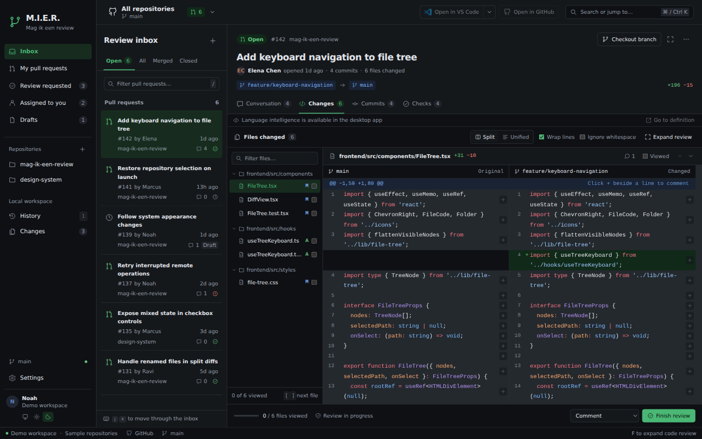
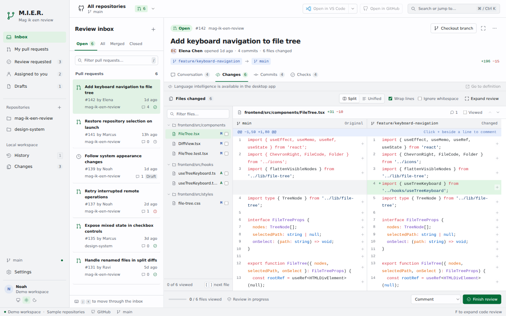

<!doctype html>
<html lang="en">
<meta charset="utf-8">
<meta name="viewport" content="width=device-width, initial-scale=1">
<title>M.I.E.R. — light and dark</title>
<style>
  html, body { margin: 0; background: transparent; }
  figure { position: relative; width: 100%; aspect-ratio: 8 / 5; margin: 0; overflow: hidden; }
  img { display: block; position: absolute; inset: 0; width: 100%; height: 100%; object-fit: cover; }
  .light { clip-path: polygon(0 0, 68.0422% 0, 31.9578% 100%, 0 100%); }
  svg { position: absolute; inset: 0; width: 100%; height: 100%; pointer-events: none; }
</style>
<figure aria-label="M.I.E.R. pull request review in light and dark mode, with a divider tilted 30 degrees from vertical">
  
  
  <svg viewBox="0 0 1600 1000" aria-hidden="true">
    <line x1="1088.675" y1="0" x2="511.325" y2="1000" stroke="rgba(127, 155, 139, 0.75)" stroke-width="2"/>
  </svg>
</figure>
</html>
